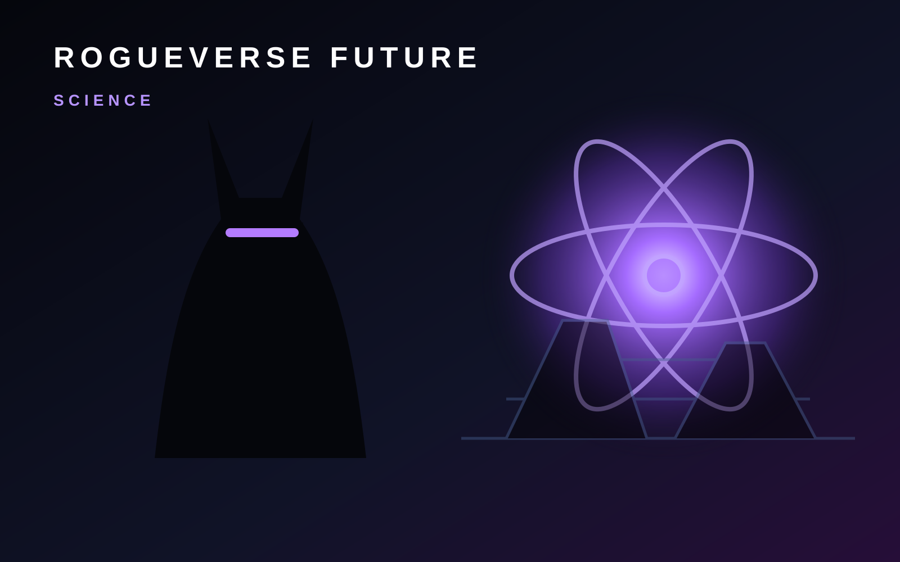

ROGUEVERSE FUTURE · SCIENCE
Science Changes the Future Before Products Do
The breakthrough people eventually notice in a device, treatment or energy system often begins years earlier as a question in a laboratory.

Technology gets attention when something ships. Science matters earlier, when researchers are still trying to understand what is possible. New materials, biological discoveries, energy systems and measurement techniques can create entire categories of products long after the original experiment leaves the headlines.
That makes scientific reporting difficult and fascinating. Early research can be meaningful without being ready for everyday use, and a promising result can become distorted when the uncertainty disappears from the headline.
Discovery is not deployment
A laboratory result answers a specific question under specific conditions. Turning that result into a practical technology requires replication, engineering, manufacturing, safety testing, cost control and often years of refinement.
RogueVerse Future will keep those stages separate. A breakthrough deserves excitement for what it demonstrates, not for promises it has not yet fulfilled.
The hidden technology pipeline
Materials science can change batteries, computing and construction. Biomedical research can reshape diagnostics and treatment. Energy research can affect grids and transportation. Advances in sensors and measurement can make previously invisible systems easier to study.
These fields overlap. Progress in one area often unlocks another, which is why the most important science stories may not fit neatly into a single product category.
What RogueVerse is watching
Our Science lane follows research in medicine, energy, materials, computing, climate, physics and other fields when the work has a clear connection to how people may live, build or create in the future.
The goal is not to turn every paper into a prophecy. It is to understand the discoveries that quietly expand the boundaries of what can be engineered next.
RogueVerse Future Primer · This page defines the Science coverage lane and will connect to reporting, analysis and deeper features as they are published.